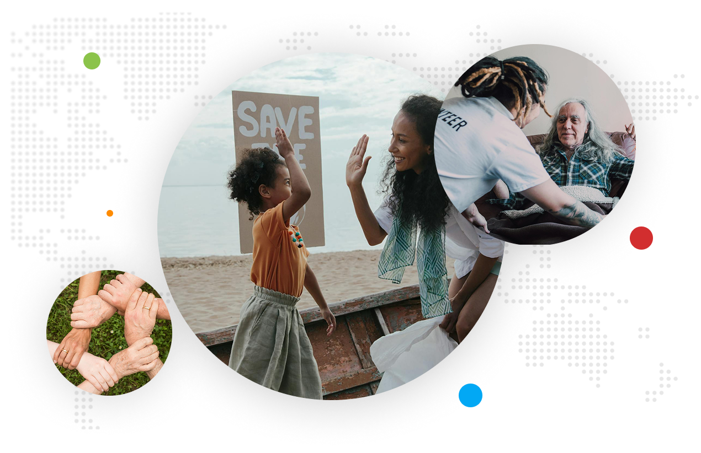

O Nas
Dobrodošli v ManusMano-
Prostovoljstvo
Verjamemo, da lahko vsak posameznik prispeva k boljši družbi s svojim časom, znanjem in sposobnostmi. Z našo platformo omogočamo, da prostovoljci enostavno najdejo projekte, ki ustrezajo njihovim interesom in časovnim zmožnostim.

Naša ZGODBA in POSLANSTVO
ManusMano je nastal kot odgovor na potrebo po boljšem povezovanju prostovoljcev in organizacij.
Pri ManusMano verjamemo v moč skupnosti in medsebojne pomoči. Naše ime izhaja iz
latinskega izraza "manus mano", kar pomeni "roka v roki" - simbol sodelovanja in
solidarnosti.
V zadnjih letih smo uspešno povezali več tisoč prostovoljcev z raznolikimi projekti po
vsej Sloveniji. Od pomoči starejšim do okoljevarstvenih pobud, od učne pomoči do
kulturnih dogodkov - naša platforma omogoča, da se dobra dela širijo in rastejo.
Pridružite se nam pri ustvarjanju pozitivnih sprememb v družbi!
ManusMano v številkah
4.890
Aktivnih prostovoljcev
126
Sodelujočih organizacij
91%
Zadovoljnih uporabnikov
15
Slovenskih regij, kjer delujemo
Kaj dela ManusMano drugače?
Platforma ManusMano prinaša inovativne pristope k prostovoljstvu, ki omogočajo učinkovitejše povezovanje ljudi z možnostmi za pomoč. Naš cilj je ustvariti smiselno, trajnostno in dostopno prostovoljsko izkušnjo za vsakogar.
PAMETNO UJEMANJE
Naš napredni sistem povezuje prostovoljce s projekti, ki ustrezajo njihovim spretnostim, interesom in razpoložljivemu času. Tako zagotavljamo, da vsak najde prostovoljsko priložnost, ki mu zares ustreza in prinaša zadovoljstvo.
SKUPNOST IN PODPORA
Pri ManusMano niste samo prostovoljec - ste del rastoče skupnosti. Nudimo stalno podporo, izobraževanja in možnosti za mreženje, ki vam pomagajo rasti in se razvijati skozi vaše prostovoljske izkušnje.
MERLJIV VPLIV
Vsako prostovoljsko dejanje šteje. Naša platforma sledi in prikazuje skupni vpliv vseh prostovoljcev, kar omogoča posameznikom in organizacijam vpogled v dejansko razliko, ki jo ustvarjajo v skupnosti.